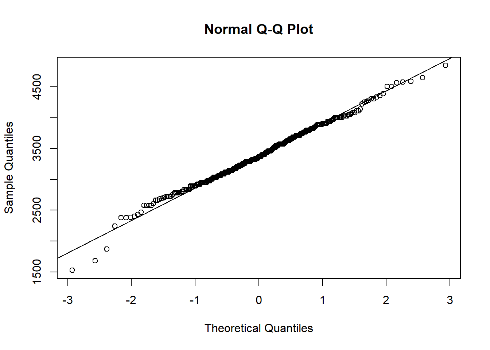
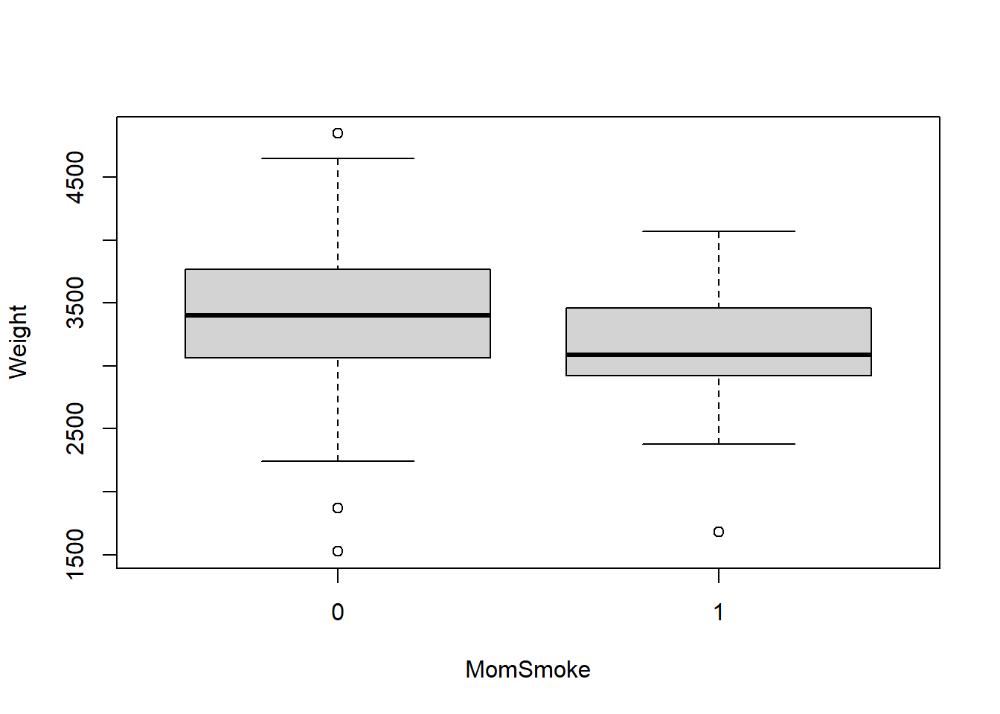
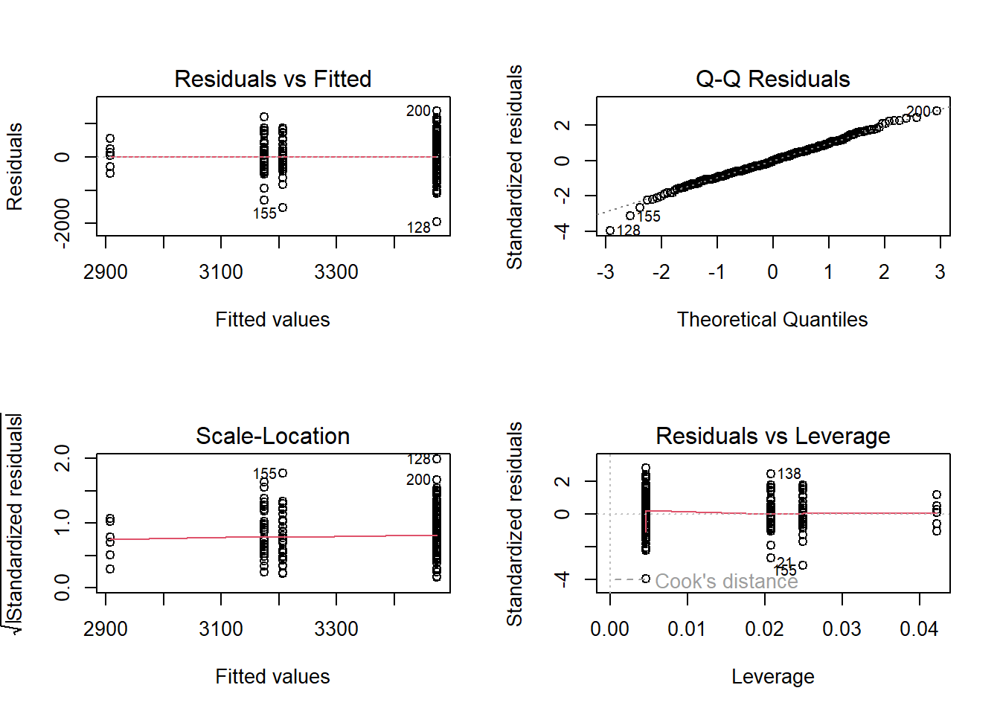

For the boxplot on infant birth weight, it looks like it may follow the normal because the interquartile range looks about equal distant and the first and fourth quartiles are not skewed. There are four outliers, one to the right and three to the left that will influence the mean of the distribution.
qqnorm(bw$Weight);qqline(bw$Weight)

For the QQ-plot, it looks like infant birth weight follows a normal distribution because almost all of the data points are along the line with the exception of 3 outliers near the bottom.
shapiro.test(bw$Weight)
Shapiro-Wilk normality test
data: bw$Weight
W = 0.99206, p-value = 0.1153
H0 = Follows a normal distribution
HA = Does not follow a normal distribution.
Based on the Shapiro-Wilk test, we will fail to reject the null because our p = 0.1153 which is greater than our alpha level of >0.05. We can state that for this data, birth weight in infants follows a normal distribution and is a reasonable assumption.
b)
boxplot(Weight ~ MomSmoke, data = bw)

Looking at the two boxplots, in the non-smoking mom group it looks like the data follows a normal distribution and has a wider spread of data being ~2250 to ~4750g. The smoking mom group looks to be right skewed within the interquartile but the 1st and 4th quartiles look equidistant so it could be normally distributed. The smoking mom group also has less spread being at ~2500 to ~4000 and does not reach weights higher than 4000. Both groups have outliers, but the non-smoking group has the only positive outlier.
c)
shapiro.test(bw$Weight [bw$MomSmoke==0])
Shapiro-Wilk normality test
data: bw$Weight[bw$MomSmoke == 0]
W = 0.99362, p-value = 0.3549
Mom Doesn’t Smoke p = 0.3549
shapiro.test(bw$Weight [bw$MomSmoke==1])
Shapiro-Wilk normality test
data: bw$Weight[bw$MomSmoke == 1]
W = 0.96299, p-value = 0.2
Mom Smokes p = 0.2
Based on the p-values from the Shapiro-Wilk test (pNonSmoking = 0.3549, pSmoking = 0.2 > 0.05), we must fail to reject the null hypothesis for the non-smoking and smoking mom groups for the infant weight distributions. Both groups follow a normal distribution.
Exercise 2
Since the birth weights of non-smoking and smoking are normally distributed, we can use a two-sample t-test (parametric). First we must test for equal variance to determine if we will use a pooled or Satterthwaite t-test.
t-test Hypothesis:
H0: meanNonSmokingBW = meanSmokingBW | both means are equal to each other
HA: meanNonSmokingBW != meanSmokingBW| the means are not equal
f-test hypothesis H0:
varianceNonSmokingBW = varianceSmokingBW | both have equal variance
HA: varianceNonSmokingBW != varianceSmokingBW | unequal variance between groups
var.test(bw$Weight [bw$MomSmoke==0], bw$Weight [bw$MomSmoke==1], alternative ='two.sided')
F test to compare two variances
data: bw$Weight[bw$MomSmoke == 0] and bw$Weight[bw$MomSmoke == 1]
F = 1.0786, num df = 253, denom df = 40, p-value = 0.8009
alternative hypothesis: true ratio of variances is not equal to 1
95 percent confidence interval:
0.6421109 1.6671729
sample estimates:
ratio of variances
1.078555
F = 1.0786 p-value = 0.8009
Since p = 0.8009 > 0.05, we will fail to reject the null and state that both groups have equal variance. We can use a pooled t-test because of equal variance.
Two Sample t-test
data: bw$Weight[bw$MomSmoke == 0] and bw$Weight[bw$MomSmoke == 1]
t = 3.071, df = 293, p-value = 0.002334
alternative hypothesis: true difference in means is not equal to 0
95 percent confidence interval:
93.37931 426.65488
sample estimates:
mean of x mean of y
3422.724 3162.707
t = 3.071 p-value = 0.002334
mean of x mean of y 3422.724 3162.707
The pooled t-test gave us a p-value of 0.002334 which is less than our alpha level of 0.05. We will reject the null and state that the non-smoking and smoking body weight means are significantly different from each other. This can be see in our t-test where the non-smoking mean is 3422.724 grams and the smoking mean is 3162.707 grams.
Exercise 3
bw$MomSmoke =as.factor(bw$MomSmoke)aov.bw =aov(Weight ~ MomSmoke, data = bw)
a)
LeveneTest(aov.bw)
Levene's Test for Homogeneity of Variance (center = median)
Df F value Pr(>F)
group 1 0.6767 0.4114
293
p = 0.4114
Since Levene’s test p-value is 0.4114 > 0.05, we will fail to reject the null so it is ok to hold on our homogeneity of variance assumption and perform the ANOVA.
b)
summary(aov.bw)
Df Sum Sq Mean Sq F value Pr(>F)
MomSmoke 1 2386708 2386708 9.431 0.00233 **
Residuals 293 74151291 253076
---
Signif. codes: 0 '***' 0.001 '**' 0.01 '*' 0.05 '.' 0.1 ' ' 1
Based on our p-value of 0.00233 (same as our t-test), we will reject the null and state that there are different mean body weights between the non-smoking and smoking mothers. The ANOVA does not show us a direct comparison of the mean values, only that one group is significantly different than the other. We got the same results from the pooled t-test.
Exercise 4
bw$Black =as.factor(bw$Black)bw$Married =as.factor(bw$Married)bw$Boy =as.factor(bw$Boy)bw$Ed =as.factor(bw$Ed)aov.bw2 =aov(Weight ~ Black + MomSmoke, data = bw)
a)
For the backward selection, we will eliminate the least insignificant variable based on p-value (closest to 1.0) until we reach our stopping rule of being unable to eliminate a significant variable. Once a variable is eliminated it can not come back.
Step 1:
Ed 7295 1 0.0300 0.8625846
Education level is eliminated because it had a p-value of 0.8625846. Deleting ‘+Ed’ from aov.bw2
Step 2:
Married 61146 1 0.2524 0.6157671
Married is eliminated because it had the highest p-value. Deleting ‘+Married’ from aov.bw2
Step 3:
Boy 179990 1 0.7449 0.3888071
Boy is now the least significant variable. Deleting ‘+ Boy’ from aov.bw2
Step 4:
MomSmoke 2513301 1 10.411 0.0013954 **
MomSmoke is now the least significant variable, but since it is significant we have reached our stopping rule and can use the remaining variables for our final model (MomSmoke and Black)
Step 5: Check Interaction Effects
Black:MomSmoke 5461 1 0.0225 0.8807474
Since the interaction is not significant, I will omit it from the final model. Deleting ‘+Black*MomSmoke’.
b)
#final modelaov.bw3 =aov(Weight ~ Black + MomSmoke, data = bw)t3.bw3 =Anova(aov.bw3, type=3)t3.bw3
Anova Table (Type III tests)
Response: Weight
Sum Sq Df F value Pr(>F)
(Intercept) 2600800716 1 10772.989 < 2.2e-16 ***
Black 3657042 1 15.148 0.0001232 ***
MomSmoke 2513301 1 10.411 0.0013954 **
Residuals 70494249 292
---
Signif. codes: 0 '***' 0.001 '**' 0.01 '*' 0.05 '.' 0.1 ' ' 1
lm.bw3 =lm(Weight ~ Black + MomSmoke, data = bw)summary(lm.bw3)$r.squared
[1] 0.07896405
r squared = 0.07896405 (7.9%)
par(mfrow=c(2,2))plot(aov.bw3)

Our final model includes the main effects of race and smoking. Both main effects in our model were significant (pRace = 0.0001232 and pSmoke = 0.0013954) with the interaction effect not being significant (pRace*Smoke = 0.8807474) so it was removed from the final model. Since both main effects were significant, we must reject the null hypothesis then state that at least one race has a different mean body weight AND at least one smoking group has a different mean body weight. To see the differences between groups, we must run a post-hoc test. The interaction effect was not significant so we will fail to reject the null and state that there is no interaction effect for this model. Our amount of explainable variation for this model is ~7.9% (r squared = 0.07896405). We can also hold our assumption for normality based on the QQ-residuals following an almost straight line.
c)
TukeyHSD(aov.bw3)
Tukey multiple comparisons of means
95% family-wise confidence level
Fit: aov(formula = Weight ~ Black + MomSmoke, data = bw)
$Black
diff lwr upr p adj
1-0 -293.9412 -445.2216 -142.6608 0.0001605
$MomSmoke
diff lwr upr p adj
1-0 -266.763 -429.5199 -104.0061 0.0013989
Black = 1 White = 0 | Smokes = 1 NonSmoke = 0
After doing Tukey’s post-hoc analysis test, we can see that white mothers have babies that weigh significantly more than babies from black mothers (p = 0.0001605, diff = -293.9412). We can also see that mothers that do not smoke produce babies that weigh significantly more than mothers that smoke (p = 0.0013989, diff = -266.763). White mothers give birth to babies that weigh more and are expected to be ~294 grams heavier than babies from black mothers with a p-value less than 0.05. Non-smoking mothers give birth to babies that weigh significantly more than smoking mothers and the babies are expected to be ~267 grams heavier with a p-value of less than 0.05.